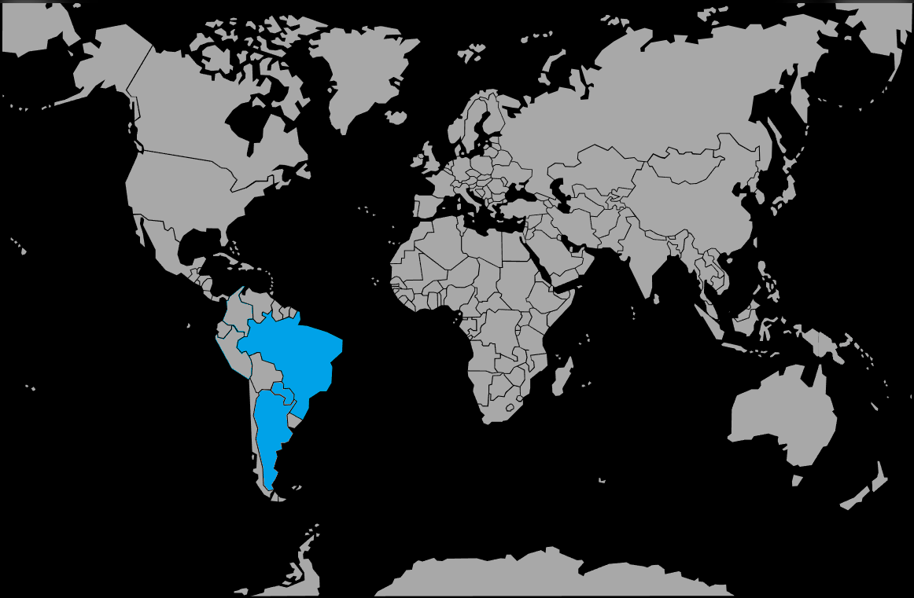

Systématique
- Ordre : Characiformes
- Famille : Characidae
- Genre : Hyphessobrycon
- Espèce : Hyphessobrycon anisitsi
Hyphessobrycon anisitsi est un petit characidé sud-américain robuste et très actif, connu sous le nom de tétra de Buenos Aires et couramment diffusé en aquariophilie.
Les adultes atteignent environ 5 à 6 cm, avec un corps argenté traversé par une bande sombre, une tache noire près de la caudale et des nageoires montrant des reflets orangés, surtout chez les mâles.
C’est un poisson de banc très vif qui occupe surtout la zone médiane; maintenu en trop petit nombre, il a tendance à mordiller les nageoires longues ou les poissons plus lents, alors qu’un grand groupe canalise cette nervosité à l’intérieur de l’espèce.
Un agencement combinant une grande zone de nage libre au centre et des plantations denses en périphérie permet de canaliser son activité, réduire le stress et limiter les comportements de pincement dirigés vers les autres poissons.
Mode : ponte libre parmi les plantes fines ou les mops de ponte; il n’y a pas de soins parentaux, les adultes mangeant facilement les œufs et les larves.
Pour l’élevage, on utilise un bac spécifique avec mops ou plantes fines, on retire les géniteurs après la ponte, puis on élève les alevins séparément avec des nourritures de très petite taille.
Dimorphisme sexuel : mâles plus colorés et plus élancés, nageoires plus orangées; femelles plus grandes, au ventre plus arrondi, surtout en période de ponte.
Biotope : cours d’eau et affluents du bassin du Rio Paraná et du Rio de la Plata, souvent à courant modéré, avec de grandes zones dégagées pour la nage et des bordures végétalisées.
Répartition
Origine naturelle :
- Bassin du Rio Paraná et du Rio Uruguay, jusqu’au Rio de la Plata.
- Présent notamment en Argentine, au Paraguay, en Uruguay et dans le sud du Brésil.
L’espèce fréquente des eaux bien oxygénées, parfois légèrement troublées, avec un espace de nage important et une végétation de berge offrant des refuges.
Paramètres de maintenance
Température : 20 à 26 °C.
pH : 6,5 à 7,5.
GH : 5 à 15 °dGH, eau douce à moyennement dure.
Courant : faible à modéré, avec bonne filtration et oxygénation.
Volume conseillé : au minimum 100 L pour un banc d’au moins 8 à 10 individus, davantage étant préférable.
Régime alimentaire
Régime : omnivore opportuniste acceptant paillettes, granulés, petites proies vivantes ou congelées (artémias, daphnies, vers de vase) et une petite part végétale.
Une alimentation variée et riche en proies de qualité, associée à quelques apports végétaux, permet de maintenir de bonnes couleurs et une excellente condition physique.